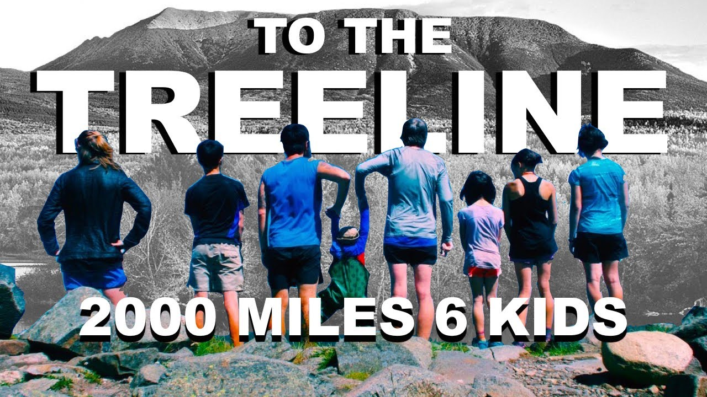

While your granola is toasting in the oven, make yourself a cup of tea and curl up beneath a blanket to watch a pair of documentaries following two (very different) groups as they thru-hike the Appalachian trail. Revel in the crunchiness- in both senses of the word.

Watch To the Treeline: 2000 Miles 6 Kids
Start your journey with the Crawfords, watching the entire family ages 2 through adult through-hike the Appalachian Trail. A feel-good documentary full of familial closeness and impressive levels of athleticism. Marvel at their “break” from the AT to run a marathon. This documentary made me want to get up and hike the AT right now.
Watch Operation Northbound
… And then bring things back to earth watching “Bear” and “Scrambled Eggs” hike the AT as frugally as possible. His blatant disregard for his own mortality is both amusing and a bit worrisome. Will he make it through in one piece? Kind of.